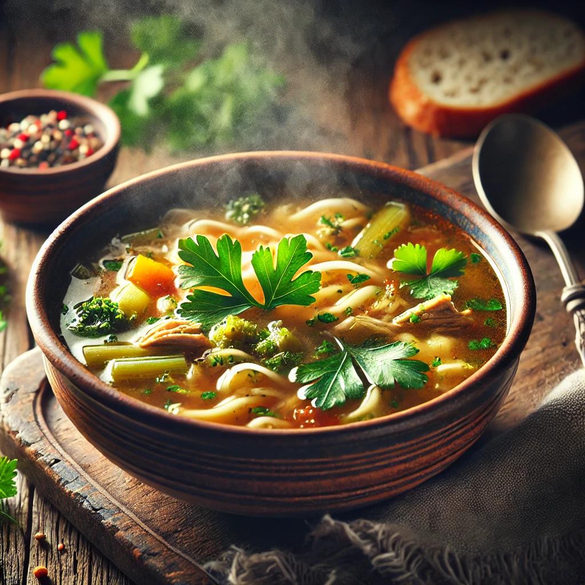

Tomato soup
מרק עגבניות בנזונה של הללי
Ingredients
3 tbsp olive oil
1 large onion - chopped
3 cloves of garlic - minced
1 large can of crushed tomatos (800 gr)
6 cups of water/stock
¾ cup white wine
½ cup white rice
2 tbsp lemon juice (½ a lemon)
1 tbsp sugar
½ cup heavy or light cream
Instructions
Sauté onion and garlic in olive oil until softened
Add wine, water, tomatos and bring to a simmer over medium heat
Add rice, stir well, bring back to simmer, lower heat to low, and cook for 45 minutes
Off heat, add sugar, lemon juice, salt and pepper to taste
After the soup has cooled slightly, add cream gently, while stirring
To serve you can add basil and parsley

רכיבים
3 כפות שמן זית
בצל גדול קצוץ
3 שיני שום קצוצות
פחית גדולה של עגבניות מרוסקות (800 גרם)
6 כוסות מים או ציר
¾ כוס יין לבן
½ כוס אורז
2 כפות מיץ לימון (חצי לימון סחוט)
1 כף סוכר
½ כוס שמנת מתוקה
הוראות
מחממים את השמן בסיר, מוסיפים את הבצל והשום ומטגנים עד שהבצל מתרכך
מוסיפים את רסק העגבניות, מרק, יין ומים. מביאים לרתיחה
מוסיפים את האורז, מעבירים לאש קטנה ומבשלים כ- 45 דקות
מורידים מהאש, מוסיפים מלח, פלפל, לימון וסוכר
אחרי שמתקרר קצת מוסיפים את השמנת תוך כדי בחישה
להגשה אפשר להוסיף בזיליקום ופטרוזיליה